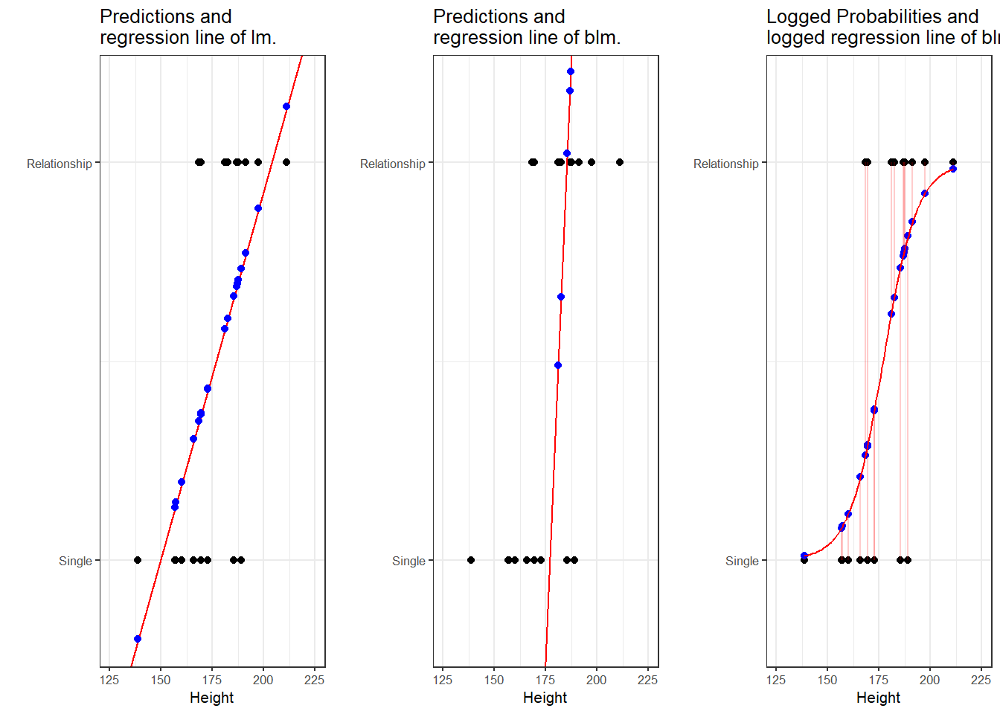
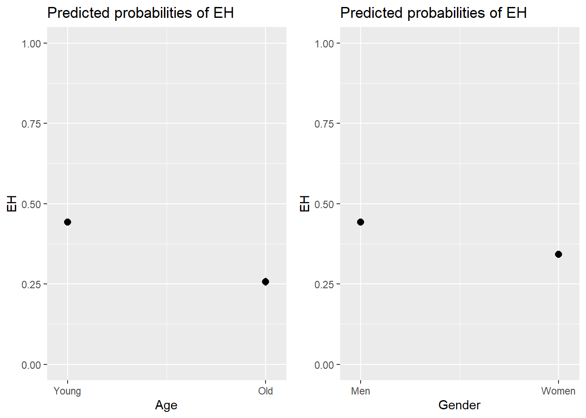

Week 10 Multiple Binomial Logistic Regression
This week, we continue with regression analyses and expand on last week by using a regression to analyse a nominal dependent variable.
Preparation and session set up
This tutorial is based on R. If you have not installed R or are new to it, you will find an introduction to and more information how to use R here. For this tutorials, we need to install certain packages from an R library so that the scripts shown below are executed without errors. Before turning to the code below, please install the packages by running the code below this paragraph. If you have already installed the packages mentioned below, then you can skip ahead and ignore this section. To install the necessary packages, simply run the following code - it may take some time (between 1 and 5 minutes to install all of the libraries so you do not need to worry if it takes some time).
# install
install.packages("car")
install.packages("emmeans")
install.packages("effects")
install.packages("flextable")
install.packages("ggplot2")
install.packages("ggpubr")
install.packages("Hmisc")
install.packages("knitr")
install.packages("lme4")
install.packages("MASS")
install.packages("mclogit")
install.packages("MuMIn")
install.packages("nlme")
install.packages("ordinal")
install.packages("rms")
install.packages("robustbase")
install.packages("sjPlot")
install.packages("stringr")
install.packages("tibble")
install.packages("dplyr")
install.packages("vcd")
install.packages("vip")
# install klippy for copy-to-clipboard button in code chunks
install.packages("remotes")
remotes::install_github("rlesur/klippy")Now that we have installed the packages, we activate them as shown below.
# set options
options(stringsAsFactors = F) # no automatic data transformation
options("scipen" = 100, "digits" = 12) # suppress math annotation
# load packages
library(dplyr)
library(Boruta)
library(car)
library(effects)
library(emmeans)
library(flextable)
library(ggfortify)
library(ggplot2)
library(ggpubr)
library(Hmisc)
library(knitr)
library(lme4)
library(MASS)
library(mclogit)
library(MuMIn)
library(nlme)
library(ordinal)
library(rms)
library(robustbase)
library(sjPlot)
library(stringr)
library(tibble)
library(vcd)
library(vip)
# activate klippy for copy-to-clipboard button
klippy::klippy()Once you have installed R and RStudio and initiated the session by executing the code shown above, you are good to go.
10.1 Basic Concepts
Logistic regression is a multivariate analysis technique that builds on and is very similar in terms of its implementation to linear regression but logistic regressions take dependent variables that represent nominal rather than numeric scaling (Harrell Jr 2015). The difference requires that the linear regression must be modified in certain ways to avoid producing non-sensical outcomes. The most fundamental difference between logistic and linear regressions is that logistic regression work on the probabilities of an outcome (the likelihood), rather than the outcome itself. In addition, the likelihoods on which the logistic regression works must be logged (logarithmized) in order to avoid produce predictions that produce values greater than 1 (instance occurs) and 0 (instance does not occur). You can check this by logging the values from -10 to 10 using the plogis function as shown below.
round(plogis(-10:10), 5)## [1] 0.00005 0.00012 0.00034 0.00091 0.00247 0.00669 0.01799 0.04743 0.11920
## [10] 0.26894 0.50000 0.73106 0.88080 0.95257 0.98201 0.99331 0.99753 0.99909
## [19] 0.99966 0.99988 0.99995If we visualize these logged values, we get an S-shaped curve which reflects the logistic function.

To understand what this mean, we will use a very simple example. In this example, we want to see whether the height of men affect their likelihood of being in a relationship. The data we use represents a data set consisting of two variables: height and relationship.

The left panel of the Figure above shows that a linear model would predict values for the relationship status, which represents a factor (0 = Single and 1 = In a Relationship), that are nonsensical because values above 1 or below 0 do not make sense. In contrast to a linear regression, which predicts actual values, such as the frequencies of prepositions in a certain text, a logistic regression predicts probabilities of events (for example, being in a relationship) rather than actual values. The center panel shows the predictions of a logistic regression and we see that a logistic regression also has an intercept and a (very steep) slope but that the regression line also predicts values that are above 1 and below 0. However, when we log the predicted values we these predicted values are transformed into probabilities with values between 0 and 1. And the logged regression line has a S-shape which reflects the logistic function. Furthermore, we can then find the optimal line (the line with the lowest residual deviance) by comparing the sum of residuals - just as we did for a simple linear model and that way, we find the regression line for a logistic regression.
10.2 Example: EH in Kiwi English
To exemplify how to implement a logistic regression in R (see Agresti 1996; Agresti and Kateri 2011) for very good and thorough introductions to this topic], we will analyze the use of the discourse particle eh in New Zealand English and test which factors correlate with its occurrence. The data set represents speech units in a corpus that were coded for the speaker who uttered a given speech unit, the gender, ethnicity, and age of that speaker and whether or not the speech unit contained an eh. To begin with, we clean the current work space, set option, install and activate relevant packages, load customized functions, and load the example data set.
# load data
blrdata <- base::readRDS(url("https://slcladal.github.io/data/bld.rda", "rb"))ID | Gender | Age | Ethnicity | EH |
<S1A-001#M> | Men | Young | Pakeha | 0 |
<S1A-001#M> | Men | Young | Pakeha | 1 |
<S1A-001#M> | Men | Young | Pakeha | 0 |
<S1A-001#M> | Men | Young | Pakeha | 0 |
<S1A-001#M> | Men | Young | Pakeha | 1 |
<S1A-001#M> | Men | Young | Pakeha | 1 |
<S1A-001#M> | Men | Young | Pakeha | 0 |
<S1A-001#M> | Men | Young | Pakeha | 0 |
<S1A-001#M> | Men | Young | Pakeha | 0 |
<S1A-001#M> | Men | Young | Pakeha | 1 |
<S1A-001#M> | Men | Young | Pakeha | 0 |
<S1A-001#M> | Men | Young | Pakeha | 0 |
<S1A-001#M> | Men | Young | Pakeha | 1 |
<S1A-001#M> | Men | Young | Pakeha | 1 |
<S1A-001#M> | Men | Young | Pakeha | 0 |
The summary of the data show that the data set contains 25,821 observations of five variables. The variable ID contains strings that represent a combination file and speaker of a speech unit. The second variable represents the gender, the third the age, and the fourth the ethnicity of speakers. The fifth variable represents whether or not a speech unit contained the discourse particle eh.
Next, we factorize the variables in our data set. In other words, we specify that the strings represent variable levels and define new reference levels because as a default R will use the variable level which first occurs in alphabet ordering as the reference level for each variable, we redefine the variable levels for Age and Ethnicity.
blrdata <- blrdata %>%
# factorize variables
dplyr::mutate_if(is.character, factor) %>%
# relevel Age (Reference = Young) and Ethnicity (Reference= Pakeha))
dplyr::mutate(Age = relevel(Age, "Young"),
Ethnicity = relevel(Ethnicity, "Pakeha"))After preparing the data, we will now plot the data to get an overview of potential relationships between variables.
blrdata %>%
dplyr::mutate(EH = ifelse(EH == "0", 0, 1)) %>%
ggplot(aes(Age, EH, color = Gender)) +
facet_wrap(~Ethnicity) +
stat_summary(fun = mean, geom = "point") +
stat_summary(fun.data = mean_cl_boot, geom = "errorbar", width = 0.2) +
theme_set(theme_bw(base_size = 10)) +
theme(legend.position = "top") +
labs(x = "", y = "Observed Probabilty of eh") +
scale_color_manual(values = c("gray20", "gray70"))
With respect to main effects, the Figure above indicates that men use eh more frequently than women, that young speakers use it more frequently compared with old speakers, and that speakers that are descendants of European settlers (Pakeha) use eh more frequently compared with Maori (the native inhabitants of New Zealand).
The plots in the lower panels do not indicate significant interactions between use of eh and the Age, Gender, and Ethnicity of speakers. In a next step, we will start building the logistic regression model.
10.3 Model Building
As a first step, we need to define contrasts and use the datadist function to store aspects of our variables that can be accessed later when plotting and summarizing the model. Contrasts define what and how variable levels should be compared and therefore influences how the results of the regression analysis are presented. In this case, we use treatment contrasts which are in-built. Treatment contrasts mean that we assess the significance of levels of a predictor against a baseline which is the reference level of a predictor. Field, Miles, and Field (2012, 414–27) and Gries (2021) provide very good and accessible explanations of contrasts and how to manually define contrasts if you would like to know more.
# set contrasts
options(contrasts =c("contr.treatment", "contr.poly"))
# create distance matrix
blrdata.dist <- datadist(blrdata)
# include distance matrix in options
options(datadist = "blrdata.dist")Next, we generate a minimal model that predicts the use of eh solely based on the intercept.
# baseline glm model
m0.glm = glm(EH ~ 1, family = binomial, data = blrdata)10.4 Model Fitting
We will now start with the model fitting procedure. In the present case, we will use a manual step-wise step-up procedure during which predictors are added to the model if they significantly improve the model fit. In addition, we will perform diagnostics as we fit the model at each step of the model fitting process rather than after the fitting.
We will test two things in particular: whether the data has incomplete information or complete separation and if the model suffers from (multi-)collinearity.
Incomplete information means that the data does not contain all combinations of the predictor or the dependent variable.
Complete separation is important because if the data does not contain cases of all combinations, the model will assume that it has found a perfect predictor. In such cases the model overestimates the effect of that that predictor and the results of that model are no longer reliable. For example, if eh was only used by young speakers in the data, the model would jump on that fact and say Ha! If there is an old speaker, that means that that speaker will never ever and under no circumstances say eh* - I can therefore ignore all other factors!*
Multicollinearity means that predictors correlate and have shared variance. This means that whichever predictor is included first will take all the variance that it can explain and the remaining part of the variable that is shared will not be attributed to the other predictor. This may lead to reporting that a factor is not significant because all of the variance it can explain is already accounted for. However, if the other predictor were included first, then the original predictor would be returned as insignificant. This means that- depending on the order in which predictors are added - the results of the regression can differ dramatically and the model is therefore not reliable. Multicollinearity is actually a very common problem and there are various ways to deal with it but it cannot be ignored (at least in regression analyses).
We will start by adding Age to the minimal adequate model.
# check incomplete information
ifelse(min(ftable(blrdata$Age, blrdata$EH)) == 0, "not possible", "possible")## [1] "possible"# add age to the model
m1.glm = glm(EH ~ Age, family = binomial, data = blrdata)
# check multicollinearity (vifs should have values of 3 or lower for main effects)
ifelse(max(vif(m1.glm)) <= 3, "vifs ok", "WARNING: high vifs!") # VIFs ok## [1] "vifs ok"# check if adding Age significantly improves model fit
anova(m1.glm, m0.glm, test = "Chi")## Analysis of Deviance Table
##
## Model 1: EH ~ Age
## Model 2: EH ~ 1
## Resid. Df Resid. Dev Df Deviance Pr(>Chi)
## 1 25819 32376.86081
## 2 25820 33007.75469 -1 -630.8938871 < 0.000000000000000222 ***
## ---
## Signif. codes: 0 '***' 0.001 '**' 0.01 '*' 0.05 '.' 0.1 ' ' 1As the data does not contain incomplete information, the vif values are below 3, and adding Age has significantly improved the model fit (the p-value of the ANOVA is lower than .05). We therefore proceed with Age included.
We continue by adding Gender. We add a second ANOVA test to see if including Gender affects the significance of other predictors in the model. If this were the case - if adding Gender would cause Age to become insignificant - then we could change the ordering in which we include predictors into our model.
ifelse(min(ftable(blrdata$Gender, blrdata$EH)) == 0, "not possible", "possible")## [1] "possible"m2.glm <- update(m1.glm, . ~ . +Gender)
ifelse(max(vif(m2.glm)) <= 3, "vifs ok", "WARNING: high vifs!") # VIFs ok## [1] "vifs ok"anova(m2.glm, m1.glm, test = "Chi")## Analysis of Deviance Table
##
## Model 1: EH ~ Age + Gender
## Model 2: EH ~ Age
## Resid. Df Resid. Dev Df Deviance Pr(>Chi)
## 1 25818 32139.54089
## 2 25819 32376.86081 -1 -237.319914 < 0.000000000000000222 ***
## ---
## Signif. codes: 0 '***' 0.001 '**' 0.01 '*' 0.05 '.' 0.1 ' ' 1Anova(m2.glm, test = "LR")## Analysis of Deviance Table (Type II tests)
##
## Response: EH
## LR Chisq Df Pr(>Chisq)
## Age 668.6350712 1 < 0.000000000000000222 ***
## Gender 237.3199140 1 < 0.000000000000000222 ***
## ---
## Signif. codes: 0 '***' 0.001 '**' 0.01 '*' 0.05 '.' 0.1 ' ' 1Again, including Gender significantly improves model fit and the data does not contain incomplete information or complete separation. Also, including Gender does not affect the significance of Age. Now, we include Ethnicity.
ifelse(min(ftable(blrdata$Ethnicity, blrdata$EH)) == 0, "not possible", "possible")## [1] "possible"m3.glm <- update(m2.glm, . ~ . +Ethnicity)
ifelse(max(vif(m3.glm)) <= 3, "vifs ok", "WARNING: high vifs!") # VIFs ok## [1] "vifs ok"anova(m3.glm, m2.glm, test = "Chi")## Analysis of Deviance Table
##
## Model 1: EH ~ Age + Gender + Ethnicity
## Model 2: EH ~ Age + Gender
## Resid. Df Resid. Dev Df Deviance Pr(>Chi)
## 1 25817 32139.27988
## 2 25818 32139.54089 -1 -0.2610145387 0.60942Since adding Ethnicity does not significantly improve the model fit, we do not need to test if its inclusion affects the significance of other predictors. We continue without Ethnicity and include the interaction between Age and Gender.
ifelse(min(ftable(blrdata$Age, blrdata$Gender, blrdata$EH)) == 0, "not possible", "possible")## [1] "possible"m4.glm <- update(m2.glm, . ~ . +Age*Gender)
ifelse(max(vif(m4.glm)) <= 3, "vifs ok", "WARNING: high vifs!") # VIFs ok## [1] "vifs ok"anova(m4.glm, m2.glm, test = "Chi")## Analysis of Deviance Table
##
## Model 1: EH ~ Age + Gender + Age:Gender
## Model 2: EH ~ Age + Gender
## Resid. Df Resid. Dev Df Deviance Pr(>Chi)
## 1 25817 32139.41665
## 2 25818 32139.54089 -1 -0.124239923 0.72448The interaction between Age and Gender is not significant which means that men and women do not behave differently with respect to their use of EH as they age. Also, the data does not contain incomplete information and the model does not suffer from multicollinearity - the predictors are not collinear. We can now include if there is a significant interaction between Age and Ethnicity.
ifelse(min(ftable(blrdata$Age, blrdata$Ethnicity, blrdata$EH)) == 0, "not possible", "possible")## [1] "possible"m5.glm <- update(m2.glm, . ~ . +Age*Ethnicity)
ifelse(max(vif(m5.glm)) <= 3, "vifs ok", "WARNING: high vifs!") # VIFs ok## [1] "vifs ok"anova(m5.glm, m2.glm, test = "Chi")## Analysis of Deviance Table
##
## Model 1: EH ~ Age + Gender + Ethnicity + Age:Ethnicity
## Model 2: EH ~ Age + Gender
## Resid. Df Resid. Dev Df Deviance Pr(>Chi)
## 1 25816 32136.47224
## 2 25818 32139.54089 -2 -3.068654514 0.2156Again, no incomplete information or multicollinearity and no significant interaction. Now, we test if there exists a significant interaction between Gender and Ethnicity.
ifelse(min(ftable(blrdata$Gender, blrdata$Ethnicity, blrdata$EH)) == 0, "not possible", "possible")## [1] "possible"m6.glm <- update(m2.glm, . ~ . +Gender*Ethnicity)
ifelse(max(vif(m6.glm)) <= 3, "vifs ok", "WARNING: high vifs!") # VIFs ok## [1] "vifs ok"anova(m6.glm, m2.glm, test = "Chi")## Analysis of Deviance Table
##
## Model 1: EH ~ Age + Gender + Ethnicity + Gender:Ethnicity
## Model 2: EH ~ Age + Gender
## Resid. Df Resid. Dev Df Deviance Pr(>Chi)
## 1 25816 32139.26864
## 2 25818 32139.54089 -2 -0.2722521835 0.87273As the interaction between Gender and Ethnicity is not significant, we continue without it. In a final step, we include the three-way interaction between Age, Gender, and Ethnicity.
ifelse(min(ftable(blrdata$Age, blrdata$Gender, blrdata$Ethnicity, blrdata$EH)) == 0, "not possible", "possible")## [1] "possible"m7.glm <- update(m2.glm, . ~ . +Gender*Ethnicity)
ifelse(max(vif(m7.glm)) <= 3, "vifs ok", "WARNING: high vifs!") # VIFs ok## [1] "vifs ok"anova(m7.glm, m2.glm, test = "Chi")## Analysis of Deviance Table
##
## Model 1: EH ~ Age + Gender + Ethnicity + Gender:Ethnicity
## Model 2: EH ~ Age + Gender
## Resid. Df Resid. Dev Df Deviance Pr(>Chi)
## 1 25816 32139.26864
## 2 25818 32139.54089 -2 -0.2722521835 0.87273We have found our final minimal adequate model because the 3-way interaction is also insignificant. As we have now arrived at the final minimal adequate model (m2.glm), we generate a final minimal model using the lrm function.
m2.lrm <- lrm(EH ~ Age+Gender, data = blrdata, x = T, y = T, linear.predictors = T)
m2.lrm## Logistic Regression Model
##
## lrm(formula = EH ~ Age + Gender, data = blrdata, x = T, y = T,
## linear.predictors = T)
##
## Model Likelihood Discrimination Rank Discrim.
## Ratio Test Indexes Indexes
## Obs 25821 LR chi2 868.21 R2 0.046 C 0.602
## 0 17114 d.f. 2 R2(2,25821)0.033 Dxy 0.203
## 1 8707 Pr(> chi2) <0.0001 R2(2,17312.8)0.049 gamma 0.302
## max |deriv| 3e-10 Brier 0.216 tau-a 0.091
##
## Coef S.E. Wald Z Pr(>|Z|)
## Intercept -0.2324 0.0223 -10.44 <0.0001
## Age=Old -0.8305 0.0335 -24.78 <0.0001
## Gender=Women -0.4201 0.0273 -15.42 <0.0001
## anova(m2.lrm)## Wald Statistics Response: EH
##
## Factor Chi-Square d.f. P
## Age 614.04 1 <.0001
## Gender 237.65 1 <.0001
## TOTAL 802.65 2 <.0001Next, we extract the confidence intervals for the coefficients of the model.
# extract the confidence intervals for the coefficients
confint(m2.glm)## 2.5 % 97.5 %
## (Intercept) -0.276050866670 -0.188778707810
## AgeOld -0.896486392278 -0.765095825382
## GenderWomen -0.473530977637 -0.366703827307Despite having low explanatory and predictive power, the age of speakers and their gender are significant as the confidence intervals of the coefficients do not overlap with 0.
10.5 Effect Size
In a next step, we compute odds ratios and their confidence intervals. Odds Ratios represent a common measure of effect size and can be used to compare effect sizes across models. Odds ratios rang between 0 and infinity. Values of 1 indicate that there is no effect. The further away the values are from 1, the stronger the effect. If the values are lower than 1, then the variable level correlates negatively with the occurrence of the outcome (the probability decreases) while values above 1 indicate a positive correlation and show that the variable level causes an increase in the probability of the outcome (the occurrence of EH).
exp(m2.glm$coefficients) # odds ratios## (Intercept) AgeOld GenderWomen
## 0.792642499264 0.435815384592 0.656972294902exp(confint(m2.glm)) # confidence intervals of the odds ratios## Es wird auf das Profilieren gewartet ...## 2.5 % 97.5 %
## (Intercept) 0.758774333456 0.827969709653
## AgeOld 0.408000698619 0.465289342309
## GenderWomen 0.622799290871 0.693014866732The odds ratios confirm that older speakers use eh significantly less often compared with younger speakers and that women use eh less frequently than men as the confidence intervals of the odds rations do not overlap with 1. In a next step, we calculate the prediction accuracy of the model.
10.6 Prediction Accuracy
In order to calculate the prediction accuracy of the model, we generate a variable called Prediction that contains the predictions of pour model and which we add to the data. Then, we use the confusionMatrix function from the caret package (Kuhn 2021) to extract the prediction accuracy.
# create variable with contains the prediction of the model
blrdata <- blrdata %>%
dplyr::mutate(Prediction = predict(m2.glm, type = "response"),
Prediction = ifelse(Prediction > .5, 1, 0),
Prediction = factor(Prediction, levels = c("0", "1")),
EH = factor(EH, levels = c("0", "1")))
# create a confusion matrix with compares observed against predicted values
caret::confusionMatrix(blrdata$Prediction, blrdata$EH)## Confusion Matrix and Statistics
##
## Reference
## Prediction 0 1
## 0 17114 8707
## 1 0 0
##
## Accuracy : 0.66279385
## 95% CI : (0.656990096, 0.668560948)
## No Information Rate : 0.66279385
## P-Value [Acc > NIR] : 0.5029107
##
## Kappa : 0
##
## Mcnemar's Test P-Value : < 0.00000000000000022
##
## Sensitivity : 1.00000000
## Specificity : 0.00000000
## Pos Pred Value : 0.66279385
## Neg Pred Value : NaN
## Prevalence : 0.66279385
## Detection Rate : 0.66279385
## Detection Prevalence : 1.00000000
## Balanced Accuracy : 0.50000000
##
## 'Positive' Class : 0
## We can see that out model has never predicted the use of eh which is common when dealing with rare phenomena. This is expected as the event s so rare that the probability of it not occurring substantively outweighs the probability of it occurring. As such, the prediction accuracy of our model is not significantly better compared to the prediction accuracy of the baseline model which is the no-information rate (NIR)) (p = 0.5029).
We can use the plot_model function from the sjPlot package (Lüdecke 2021) to visualize the effects.
# predicted probability
efp1 <- plot_model(m2.glm, type = "pred", terms = c("Age"), axis.lim = c(0, 1))
# predicted percentage
efp2 <- plot_model(m2.glm, type = "pred", terms = c("Gender"), axis.lim = c(0, 1))
grid.arrange(efp1, efp2, nrow = 1)
And we can also combine the visualization of the effects in a single plot as shown below.
sjPlot::plot_model(m2.glm, type = "pred",
terms = c("Age", "Gender"),
axis.lim = c(0, 1)) +
theme(legend.position = "top") +
labs(x = "", y = "Predicted Probabilty of eh", title = "") +
scale_color_manual(values = c("gray20", "gray70"))
10.7 Summarizing Results
As a final step, we summarize our findings in tabulated form.
sjPlot::tab_model(m2.glm)| EH | |||
|---|---|---|---|
| Predictors | Odds Ratios | CI | p |
| (Intercept) | 0.79 | 0.76 – 0.83 | <0.001 |
| Age [Old] | 0.44 | 0.41 – 0.47 | <0.001 |
| Gender [Women] | 0.66 | 0.62 – 0.69 | <0.001 |
| Observations | 25821 | ||
| R2 Tjur | 0.032 | ||
We can use the reports package (Makowski et al. 2021) to summarize the analysis.
report::report(m2.glm)## We fitted a logistic model (estimated using ML) to predict EH with Age and Gender (formula: EH ~ Age + Gender). The model's explanatory power is weak (Tjur's R2 = 0.03). The model's intercept, corresponding to Age = Young and Gender = Men, is at -0.23 (95% CI [-0.28, -0.19], p < .001). Within this model:
##
## - The effect of Age [Old] is statistically significant and negative (beta = -0.83, 95% CI [-0.90, -0.77], p < .001; Std. beta = -0.83, 95% CI [-0.90, -0.77])
## - The effect of Gender [Women] is statistically significant and negative (beta = -0.42, 95% CI [-0.47, -0.37], p < .001; Std. beta = -0.42, 95% CI [-0.47, -0.37])
##
## Standardized parameters were obtained by fitting the model on a standardized version of the dataset. 95% Confidence Intervals (CIs) and p-values were computed usingWe can use this output to write up a final report:
We fitted a logistic model (estimated using ML) to predict the use of the utterance-final discourse particle eh with Age and Gender (formula: EH ~ Age + Gender). The model’s explanatory power is weak (Tjur’s R2 = 0.03). The model’s intercept, corresponding to Age = Young and Gender = Men, is at -0.23 (95% CI [-0.28, -0.19], p < .001). Within this model:
The effect of Age [Old] is statistically significant and negative (beta = -0.83, 95% CI [-0.90, -0.77], p < .001; Std. beta = -0.83, 95% CI [-0.90, -0.77])
The effect of Gender [Women] is statistically significant and negative (beta = -0.42, 95% CI [-0.47, -0.37], p < .001; Std. beta = -0.42, 95% CI [-0.47, -0.37])
Standardized parameters were obtained by fitting the model on a standardized version of the dataset. 95% Confidence Intervals (CIs) and p-values were computed using